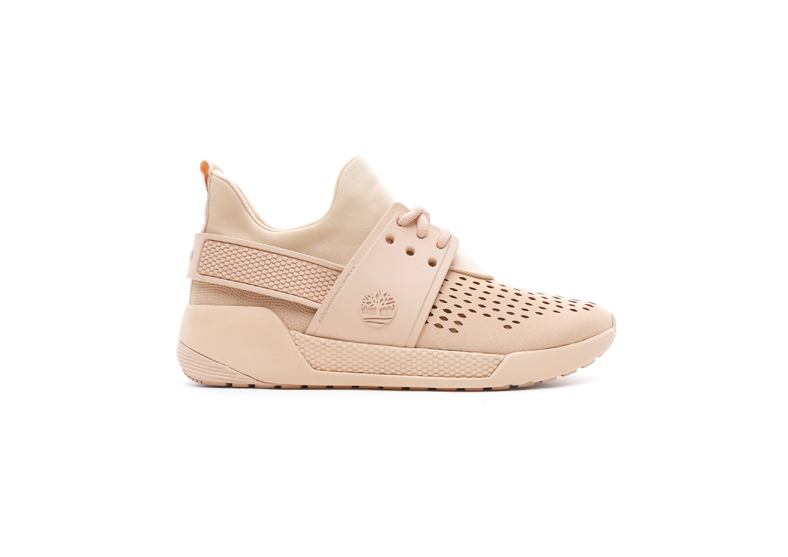
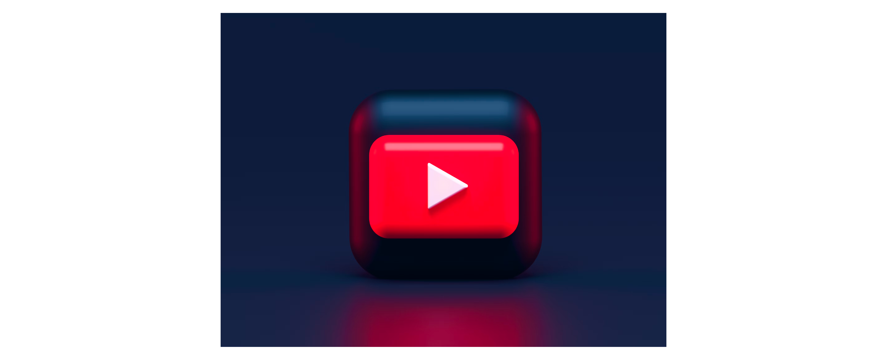
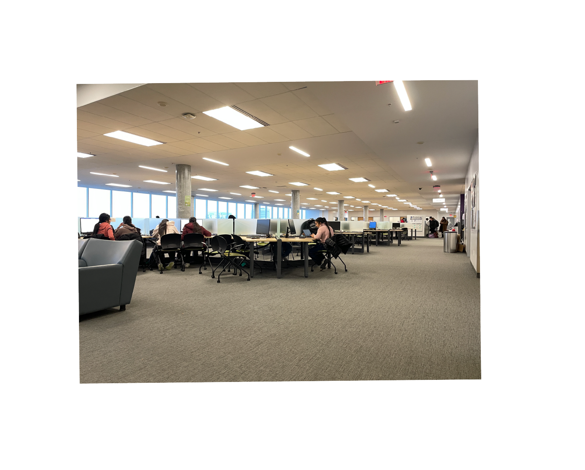

Promotional Video
Produced a compelling promotional video for Timberland shoes, emphasizing their durability, comfort, and style, aiming to engage and attract customers.
Team : Venkatakisan Levaka , Pooria Zand
Tools : Adobe Premiere , DSLR, Highland
Timberland women’s Kiri up sneakers
Call for action: The viewer redirects to buy this product.
Platform
Our final video would be optimized for a TV/Youtube promotion. It`s landscape, 1920 x 1080 pixels, and the aspect ratio is 16:9.
Play-by-play breakdown

“Uplifts your comfort” is the slogan of this video, so we are going to emphasize on “comfort” side of the slogan and we have targeted a college student to demonstrate that. The video starts with a piece of a fast music and we see close-up shots of our model (the student) packs her stuff in the library of the college and gets prepared to leave; then she ties the shoelace and starts to walk. We have multiple shots from different angles to demonstrate all the details we have in mind. These shots should be done in 5 to 10 seconds.
We would see her walking through hallways, classes, indoor spaces, and outdoors. and this would take 15 seconds. The person and the shoe are in the center and all other locations change in order to show how comfortable and practical would be this particular pair of shoes in all occasions. These shots are medium shots and some close-ups too!
Finally, we have some in-studio shots (stop motion video) with the shoe in front of a green backdrop curtain, so we can have different backgrounds set for this part. The slogan and the logo appear at the end, and the last part is almost 5 to 10 seconds. The video has no voice-over, and all parts and acts are based on the music rhythm.
Locations
The actress would be one of my college students; we start in the college library, hallways, gym, and classes. Then we head out for outdoor shots. They would be captured in the Humber arboretum, bus stop, and entrance hallways.